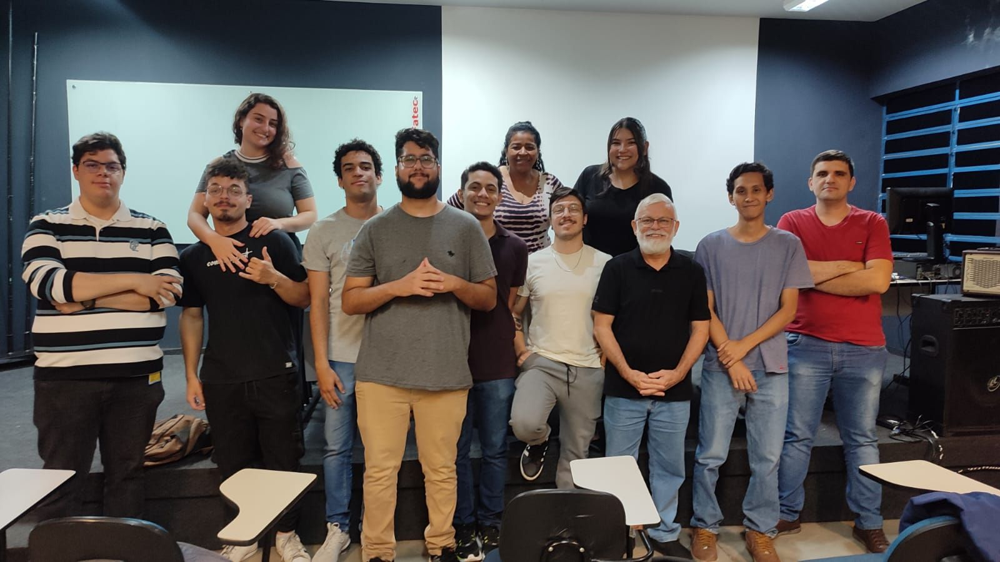

Faculdade Anhanguera Internacional
Período: Fevereiro de 2020 à Dezembro de 2021.
Fiz esta Graduação na Modalidade à Distância durante a Pandemia pois a minha intenção era
prestar Concursos Públicos na área, mas isso acabou não acontecendo.
Neste Curso tive um aprendizado sobre noções em Direitos Cívis, Direito Político e Social, além
de muitos contéudos voltados a Registro Natural de Pessoas Cívis.
Enfim acabei não seguindo na área e resolvi migrar para Tecnologia.
Faculdade de Tecnologia de Araçatuba - FATEC
Périodo: Agosto de 2021 à Junho de 2024.
Nesta Graduação aprendi desde toda a parte de arquitera de Computadores, redes, Lógica de
Programação, Análise de Sistemas, Programação WEB e de Dispositivos Móveis, além de noções
Engenharia de Software.

Univesp - Universidade Virtual de São Paulo
Atualmente estou cursando meu Bacharelado em Engenharia da Computação pela UNIVESP - Universidade
Virtual de São Paulo e estou terminado o Primeiro Período.